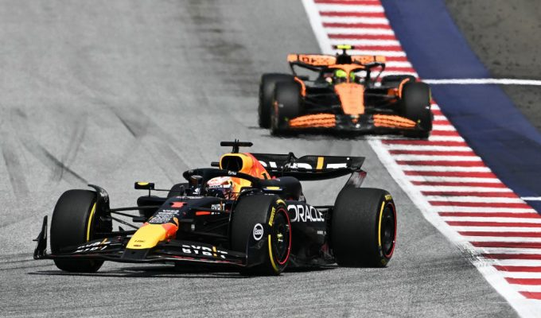

Квиз по основи на HTML
Прашања за Формула 1
Одговори на следниве прашања за да го провериш своето знаење за најбрзиот спорт во светот - Формула 1:

Прашање 1
Кој е возачот со најмногу победи во F1?
Макс Верстапен
Луис Хамилтон
Мајкл Шумахер
Себастиан Ветел
Прашање 2
Во која држава била одржана првата трка?
Велика Британија(Silverstone)
Монако
Италија (Monza)
Белгија (Spa-Francorchamps)
Прашање 3
Кој е возачот кој го држи рекордот за најбрз круг на патеката Monza?
Луис Хамилтон
Пабло Монтоја
Оскар Пиастри
Макс Верстапен
Прашање 4
Која е најкратка патека која се наоѓа на календарот?
Австрија
Австралија
Монако
Кина
Прашање 5
Кој e најмладиот светски шампион?
Себастиан Ветел
Нико Розберг
Аиртон Сена
Мајкл Шумахер
Назад на почеток